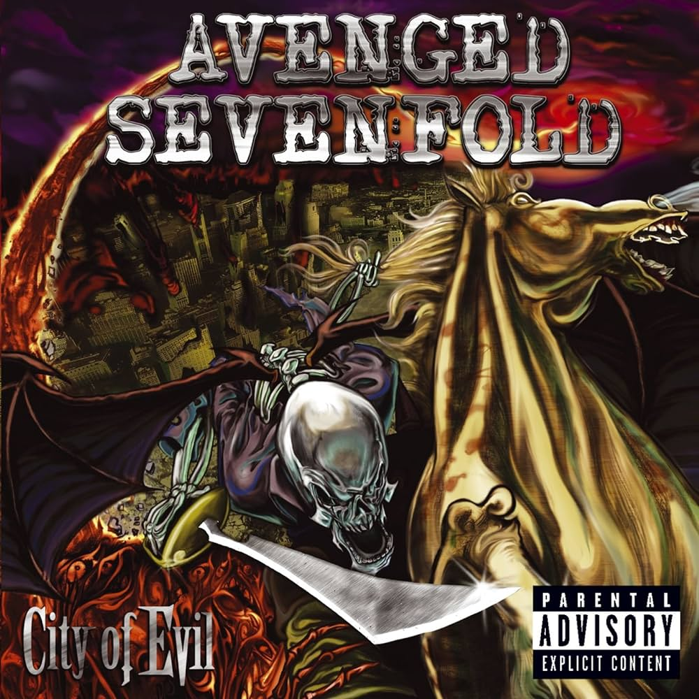

Qual meu TOP 10 da banda A7X?
Minha relação com a banda:
Se me lembro bem, foi em 2013 que conheci a banda (com apenas 8 anos) e nunca mais deixei de ouvir.
A primeira música que escutei foi Carry On quando zerei COD: Black OPS 2. Comecei a escutar mais e mais e aqui
estou, totalmente viciado na banda. Ok, mas qual meu TOP 10 das músicas do A7X?
Meu TOP 10
1. Critical Acclaim - Avenged Sevenfold
2. Afterlife - Avenged Sevenfold
3. So Far Away - Nightmare
4. Nightmare - Nightmare
5. A Little Piece of Heaven- Avenged Sevenfold
6. Almost Easy - Avenged Sevenfold
7. Hail to the King- Hail to the King
8. M.I.A.- City Of Evil
9. Brompton Cocktail - Avenged Sevenfold
10. Tonight the World Dies - Nightmare